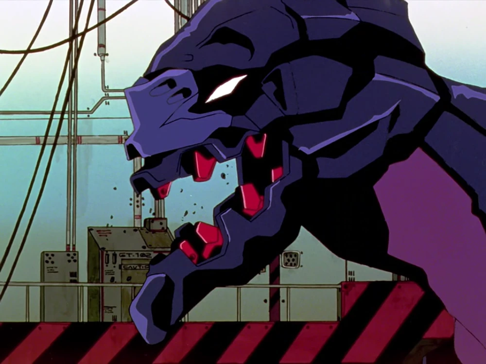

Bardiel
Présent dans un nuage au-dessus de l'océan Pacifique, il infecte l'Evangelion Unité-03 alors qu'elle est transportée entre les USA et le Japon. L'Ange se réveille quand l'Eva est activée et il en prend le contrôle. Bardiel est vaincu par l'Unité-01 contrôlée par le Dummy System.